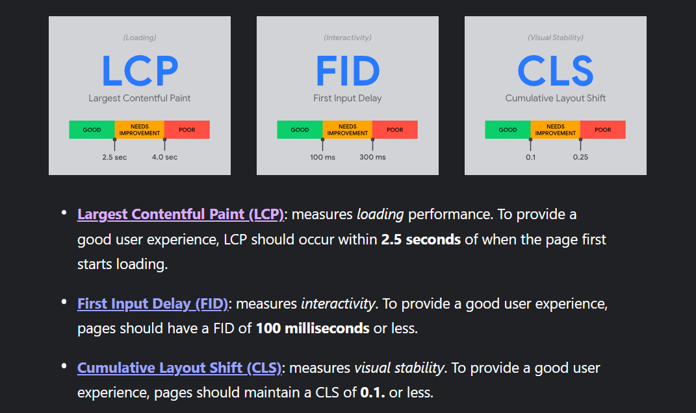

Obtenir plus d'informations

- Core Web Vitals : Si toutes les métriques sont bonnes =>
Réussite, sinon Echec
- FID (First Input Delay) : Mesure l'interactivité de la page (< = 100ms est bon).
- LCP (Largest Contentful Paint) : Mesure les performances de chargement de la page (< = 2,5s est bon).
- CLS (Cumulative Layout Shift) : Mesure la stabilité visuelle (< = 0,1s est bon).
| Date |
URL |
Desktop Core Web Vitals |
LCP |
FID |
CLS |
Mobile Core Web Vitals |
LCP |
FID |
CLS |